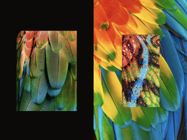
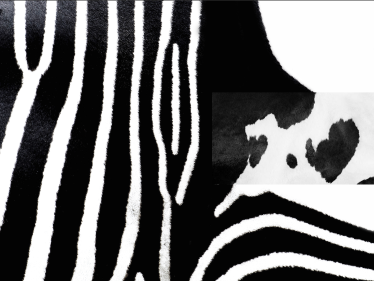
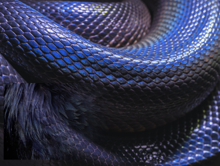
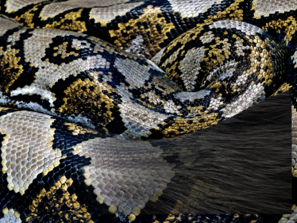

Penser/Classer
penser classer est un travail autour des pelages et plumages d'animaux. Une collection de 100 images de peaux d'animaux repertoriées selon un classement et mis en correspondance avec le texte de Goeroges Perec.
type : édition
technos : Indesign, Photoshop
date : mai-juin 2021






